Стройка по технологии тисэ.

Различные технологии, применяющиеся в строительстве вообще и в индивидуальном в частности, отличаются друг от друга собственно самим процессом и проблемами, которые разрешаются тем или иным способом.
Деревянные дома декларируются как обеспечивающие высокую степень комфорта в экологически чистом жилье; главным плюсом каркасно-щитового строительства является относительно небольшая себестоимость постройки; каменные и кирпичные дома ассоциируются с добротностью, надежностью и долговечностью; технологии несъемной опалубки основной упор делают на энергосбережении и скорости строительства стен. Технология ТИСЭ решает весь этот комплекс задач, поскольку одновременно:
1) уменьшает затраты на строительство в несколько раз, энергозатраты при эксплуатации – в 2 раза;
2) обеспечивает экологическую безопасность;
3) создает комфортные условия проживания в каменном доме, близкие к тем, которые складываются в деревянных домах;
4) гарантирует высокую пожаробезопасность, надежность даже в сейсмоопасных районах и практически неограниченный срок службы постройки;
5) позволяет обходиться собственными силами;
6) дает возможность начать строительство с небольшим начальным капиталом, вести его в короткие сроки и при необходимости прерывать;
7) отличается простотой и надежностью оборудования, малым объемом стройматериалов;
8) не ограничивает в выборе участка, который может быть как обжитым, так и лишенным коммуникаций; архитектуры и отделочных материалов.
Выбрав проект дома, продумав его планировку, следует проработать конструкции будущей постройки. Наиболее ответственно нужно подойти к главным конструктивным элементам: фундаменту, стенам и перекрытиям.
Блоки, из которых кладутся стены по технологии ТИСЭ, формуются посредством переставной опалубки – так называемого формовочного модуля ТИСЭ (рис. 85), который заполняется жесткой смесью из песка и цемента, затворенной небольшим количеством воды. После того как форма заполнена, смесь уплотняется, и тут же осуществляется распалубка. На это уходит 5–8 мин.
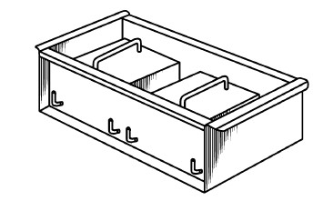
Рис. 85. Формовочный модуль ТИСЭ (общий вид)
Поскольку блоки пустотные, изготавливаются из доступного сырья, их себестоимость не просто невысока, она в 3–4 раза дешевле, если сравнивать с кирпичной кладкой или установкой готовых блоков.
Отличительной особенностью технологии ТИСЭ является то, что блок формуется не отдельно на площадке, а непосредственно на стене (конечно, можно поступить традиционно: заготовить блоки и потом возводить из них стену, но это, по мнению разработчика технологии, представляется менее целесообразным).
Поскольку стены могут иметь различную толщину, то для этого предназначаются модули ТИСЭ (модуль ТИСЭ-1 не используется, поскольку внутренние перегородки, для которых он был разработан, могут формоваться другими модулями, представленными далее) различных типоразмеров:
1) ТИСЭ-2 – для стен толщиной 250 мм;
2) ТИСЭ-3 – для стен толщиной 380 мм.
Так как материалом для модулей служит сталь, то они имеют длительный срок службы, подсчитано, что из каждого можно выполнить более 10 000 блоков.
Формовочный модуль состоит из замкнутой формы, двух пустотообразователей, которые фиксируются штырями: четырьмя поперечными и одним продольным. Каждый модуль оснащен выжимной панелью, трамбовкой, скребком, перегородкой и формовочным уголком (рис. 86).
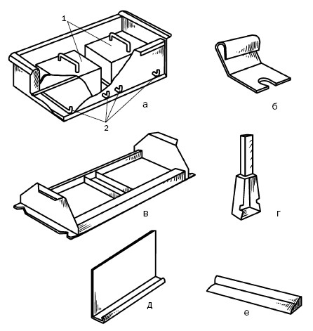
Рис. 86. Комплектующие модуля ТИСЭ: а – модуль; б – скребок;
в – выжимная панель; г – трамбовка; д – перегородка; е – формовочный уголок; 1 – пустотообразователи; 2 – съемные штыри
Дополнительно модули ТИСЭ-2 и ТИСЭ-3 включают скобку, с помощью которой «выбирается четверть» для оконных и дверных блоков. Модуль ТИСЭ-3 (иногда и модуль ТИСЭ-2) может иметь пустотную вставку для устранения среднего мостика холода в стеновых блоках. Представленные комплектующие показаны на рис. 87.
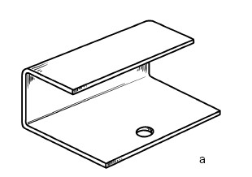
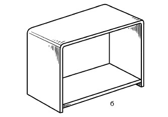
Рис. 87. Дополнительные комплектующие модулей ТИСЭ: а – скобка; б – вставка
Размеры стеновых блоков показаны на рис. 88.
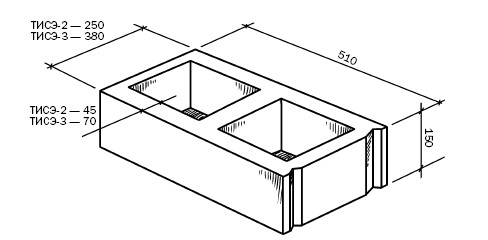
Рис. 88. Габариты стеновых блоков ТИСЭ (размеры указаны в миллиметрах)
Каждый блок на одном из торцов имеет по два вертикальных паза, которые заполняются раствором в процессе кладки. Блоки ТИСЭ облегченные, и пустотность стеновых блоков составляет 45 %, стеновых блоков со вставкой – 50 %.
Кроме представленных, разработан модуль ТИСЭ-4, который дает возможность доводить толщину стены до 510 мм. Он имеет четыре пустотообразователя, взятых от модуля ТИСЭ-2. Они могут формоваться раздельно или быть сдвоенными (рис. 89).
Формовочные модули вполне компактны и относительно легки: модуль ТИСЭ-2 весит 14 кг, модуль ТИСЭ-3 – 18 кг. Для переноски модулей предусмотрена специальная форма (рис. 90), в которой все составляющие закрепляются фиксатором из проволоки, пронизывающим отверстия в штырях. Продольный штырь одновременно служит и рукояткой.
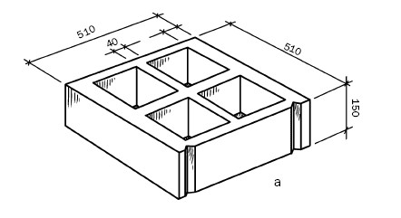
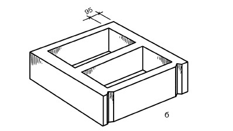
Рис. 89. Стеновые блоки ТИСЭ-4 с пустотообразователями (размеры указаны в миллиметрах): а – раздельными; б – сдвоенными
При возведении стен по технологии ТИСЭ надо решить, какой модуль будет наиболее оптимальным. При этом следует учесть такие параметры:
1) этажность. Для одно– или двухэтажного дома подойдут модули ТИСЭ-2 и ТИСЭ-3. Если дом будет трехэтажным с деревянными перекрытиями, то для нижнего этажа подойдет модуль ТИСЭ-3, для остальных – ТИСЭ-2;
2) утепление. Если предполагается утеплить дом посредством засыпки вертикальных каналов, то выбор следует остановить на модуле ТИСЭ-3; при условии выполнения внутренней теплоизоляции совместно с заполнением пустот рассыпным утеплителем можно использовать и модуль ТИСЭ-2, и модуль ТИСЭ-3. При наружном утеплении модули могут быть любыми;
3) перекрытие, которое также оказывает влияние на толщину стен. Перекрытия бывают плавающими, т. е. они лежат на стенах, не поддерживая их; и жесткими, образующими со стенами единую конструкцию. Первое характерно для деревянных перекрытий, второе для бетонных. Стены одно– или двухэтажного дома могут иметь любые перекрытия. Если дом трехэтажный, то при деревянных перекрытиях стены первого этажа следует возводить с помощью модуля ТИСЭ-3, при бетонных – ТИСЭ-2;
4) вентиляция. Если вентиляционные и дымовые каналы будут вертикальными и проходить внутри стен, то следует воспользоваться модулем ТИСЭ-3. Стена толщиной 380 мм нужна как для увеличения сечения этих каналов, так и для обеспечения устойчивости дымовой трубы, возвышающейся над кровлей, поскольку она должна противостоять значительным ветровым нагрузкам;
5) боковые нагрузки. Стены подвала испытывают воздействие грунта, при сейсмических толчках возникают инерционные нагрузки. С учетом этого желательно для стен применять модуль ТИСЭ-3, усиленный вертикальным армированием. При этом перекрытия должны быть железобетонными. Для малоэтажных строений подойдет и модуль ТИСЭ-2.
При повышенных требованиях, предъявляемых к конструкции, предпочтение следует отдать модулю ТИСЭ-4. Он подойдет для возведения колонн, высоких вентиляционных и дымовых труб, а также для нижней трети стен длиной 5–7 м, для которых не предусмотрено боковое крепление.
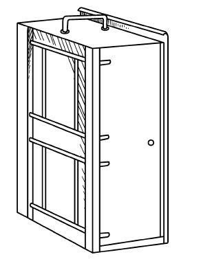
Рис. 90. Модуль ТИСЭ, сложенный для транспортировки
Возможности применения модулей достаточно широки, например все модули могут использоваться для формования полнотелых блоков, бордюрных камней и тротуарной плитки толщиной 55 мм и более; их можно оснащать резиновой матрицей, имитирующей любую фактуру, и т. д.
Сейчас производится модуль ТИСЭ-Д, который позволяет возводить стены с разными радиусами скругления (он заказывается и выполняется для стены в соответствии с необходимыми параметрами). Модуль укомплектован так же, как и модули ТИСЭ-2 или ТИСЭ-3, но вместо формовочного уголка предложена стенка (рис. 91).
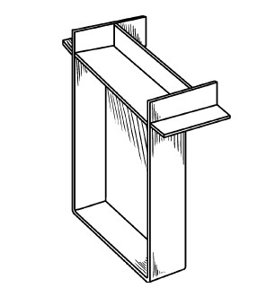
Рис. 91. Стенка для модуля ТИСЭ-Д
Таким образом, познакомившись с основными элементами, с помощью которых можно строить стены по технологии ТИСЭ, необходимо уделить внимание и тому, чем именно наполняются модули, способные, по утверждению автора (Р. Н. Яковлев) выдержать более 100 т. Первоначально смесь должна была содержать цемент, песок (1: 3) и немного воды. Такие жесткие смеси редко встречаются в индивидуальном строительстве. Поэтому представляется важным упомянуть о пескобетоне. Связующим в нем выступает портландцемент, о свойствах которого мы уже говорили. Добавим только, что цемент является вполне экологичным материалом, поскольку минеральные составляющие его с этой точки зрения нейтральны. Неэкологичность бетонных построек связана не с цементом, а с гранитным щебнем и недостаточной воздухопроницаемостью стен.
В качестве заполнителя, который занимает примерно 80 % объема, применяется песок. Поскольку сформованный блок тут же подвергается распалубке, то к раствору предъявляются требования повышенной жесткости. Цель, с которой применяются заполнители вообще и песок в частности, состоит в том, чтобы образовать нечто вроде каркаса, который сохранится после распалубки.
Раствор, содержащий мелкозернистый песок, отличается повышенной пластичностью и по консистенции очень напоминает сметану, поэтому как составляющая пескобетона он не очень подходит, но при отсутствии средне– и крупнозернистого песка все же используется, однако при этом следует тщательно дозировать воду, так как малейший перелив приводит к тому, что блок не будет держать форму.
Идеальной является смесь мелкого песка (просеивается сквозь сито с размером ячеек 0,16 мм) с крупным (величина зерен составляет 0,14–5 мм), причем количество первого не должно превышать 10 %. Чем больше в растворе мелкого песка, тем больше его удельная поверхность, тем больше нужно цемента. В соответствии с ГОСТом 8736-85 пески подразделяются на несколько групп (табл. 10).
Таблица 10
Классификация песка по признаку зернистости (ГОСТ 8736-85)
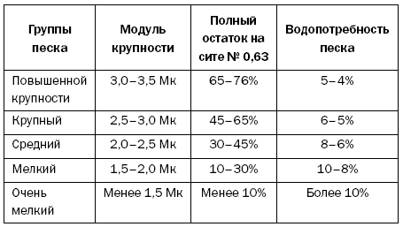
Водопотребностью называется то наибольшее количество воды, которое впитает сухой песок в весовом отношении; у мелкого песка вдвое превышает тот же параметр крупного.
Для составления формовочной смеси имеет значение и такое свойство песка, как плотность, которая характеризуется тем, что при повышении его влажности изменяется парадоксальным образом. Если, например, сухой песок имеет плотность, равную 1500 кг/м , то при влажности 5 % она падает до 1300 кг/м , а при влажности 15 % возрастает до 1900 кг/м (по этой причине песок поливают водой, если хотят уплотнить). Когда указывается состав цементно-песчаной смеси, то имеется в виду соотношение сухого песка и цемента. Важно, чтобы в песке не было никаких примесей, так как это негативно сказывается на прочности и морозостойкости бетона. Если уж приходится использовать такой песок, предварительно его следует промыть.
Кроме плотности, для заполнителей важны их прочность и пористость, потому что при низкой прочности и блок получится непрочным, а при повышенной пористости бетон несколько утратит свою морозостойкость.
Еще одним необходимым компонентом пескобетона является вода, в которой не должно быть солей и кислот, препятствующих твердению цемента и вызывающих коррозию металла.
Главный параметр, от которого зависят прочность, морозостойкость и устойчивость формы блока, – жесткость, или подвижность, бетона, которая определяется с помощью эталонного конуса. Собственно процедура, которая позволяет установить подвижность раствора, состоит в следующем. Конус (о том, каким он должен быть, мы уже говорили) наполняется приготовленным раствором, который после тщательного уплотнения от него освобождается, после чего смесь под тяжестью своего веса начинает оседать. То, насколько снизится высота смеси (насколько осядет конус), и будет показателем жесткости (рис. 92).
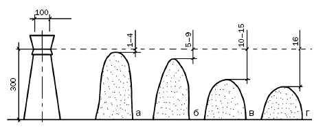
Рис. 92. Определение жесткости раствора: а – жесткий; б – подвижный; в – пластичный; г – литой
В идеале, конечно, необходимо перед заливкой раствора определить его жесткость, чего в практике индивидуального строительства не делается. Поскольку этот параметр очень важен, можем посоветовать воспользоваться такими критериями:
1) если порцию смеси сжать в ладони, а потом отпустить и при этом она не рассыплется, а на руке не останется цементного молока, этот раствор можно использовать для формования блока;
2) если на поверхности готового блока выступило цементное молоко, значит, с подвижностью раствора все в порядке.
Когда технология ТИСЭ только внедрялась, требования к соотношению цемента и песка в растворе диктовались однозначно – строго 1: 3. В настоящее время позиция разработчика перестала быть столь категоричной, и вот почему. В частном строительстве, как правило, возводятся дома не более трех этажей. Если подсчитать нагрузки на стеновые блоки и их возможность противостоять им, то результаты вполне оптимистичны. В доказательство он приводит такой пример.
«Дом в два этажа с бетонными перекрытиями. Стены возведены с опалубкой ТИСЭ-2. Какая нагрузка приходится на один нижний стеновой блок?
Данные веса возьмем из расчета столбчато-ленточного фундамента. За вычетом веса фундамента вес дома размерами 6 x 8 м – 143 т.
Периметр внешних и внутренних стен – 34 м. Вдоль периметра можно поместить 70 стеновых блоков. Таким образом, на один нижний стеновой блок приходится около 2 т нагрузки. Несложно подсчитать, что запас прочности пятидесятикратный!!!»
Наличие такого запаса мощности имеет большое значение, поскольку, с одной стороны, индивидуальные застройщики, как правило, не являются профессионалами в области строительства, технология может нарушаться вследствие использования некачественных материалов, например старого цемента, перелива воды, недостаточного уплотнения смеси и т. п. С другой стороны, в технологии заложен своеобразный контроль качества: блок деформируется или рассыплется, если возникнут отклонения от соответствующих требований. Кроме того, частное строительство – это не только двух– или трехэтажные особняки, это и курятники, и бани, и пр., что тоже стало одной из причин некоторых послаблений.
Разработчик представляет несколько таблиц (Р. Н. Яковлев. М., 2002), по которым можно самостоятельно определить наиболее подходящий состав смеси для возведения стен дома (табл. 11, 12, 13).
Таблица 11
Предельные нагрузки на стеновые блоки, отформованные с модулями ТИСЭ, в зависимости от марки раствора
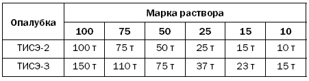
Таблица 12
Весовое соотношение количества цемента и песка в зависимости от марки цемента и марки раствора
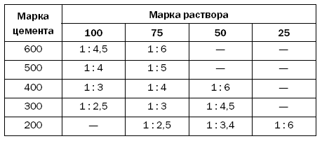
В порядке комментария скажем:
1) марка раствора, из которого будет формоваться блок, определяется теми предельными нагрузками, которым он должен будет противостоять;
2) для обеспечения высокой степени надежности постройки важно, чтобы коэффициент прочности принимался не менее чем К = 10–20. Если, например, один стеновой блок противостоит нагрузке 2 т, то его предельная прочность должна составить, как минимум, 20–40 т. Эта величина задается застройщиком, который принимает в расчет те условия, в которых будет эксплуатироваться блок;
Таблица 13
Расход материалов на 10 литров раствора
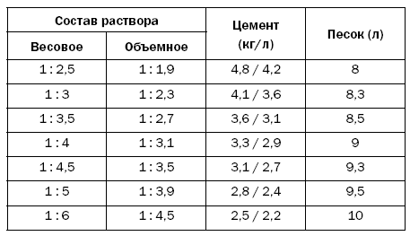
3) если, помимо вертикальной нагрузки, блок будет испытывать воздействие и боковой, то, естественно, запас прочности должен быть еще выше – 30–40;
4) если блок пребывает в условиях повышенной влажности (в табл. 11 представлены сведения для блоков, в течение первых 28 суток находившихся во влажной среде) и периодически испытывает замораживание и оттаивание, то его запас прочности должен быть удвоен;
5) если в течение первых семи дней не будет обеспечена такая влажность, которая необходима для созревания бетона, предельная прочность блока снизится в 2 раза;
6) в табл. 12 содержатся данные, рассчитанные для песка, удельный вес которого составляет 1500 кг/м , и для цемента, удельный вес которого равен 1150 кг/м ;
7) ориентируясь на табл. 13, можно легко определить количество песка и цемента, которое потребуется, чтобы получить стеновой блок заданной прочности из цемента той марки, которая имеется в распоряжении;
8) благодаря данным табл. 13 реально сэкономить цемент и уменьшить себестоимость стен. Но обращаем внимание на то, что соотношение 1: 6 не только обеспечит экономию цемента в 2 раза, но практически на столько же уменьшит прочность стен. Это соотношение предельно возможное, поэтому не следует на него опираться.
Какую все-таки смесь выбрать? Соотношение цемента и песка 1: 3 дает очень прочные стеновые блоки, поэтому им место там, где нагрузки особенно высоки. Чаще всего используются смеси 1: 4 и 1: 5. Кроме того, не стоит стремиться к чрезмерной экономии. Разница в расходе песка и цемента в представленных смесях – 15 %. Если исходить из общей стоимости цемента, песка, арматуры, то экономия не превысит 10 %. А с учетом того, что стоимость работ примерно равна стоимости расходных материалов, то она снизится до 5 %. При предполагаемых утеплении и отделки экономия и вовсе дойдет до 2–3 %. Одновременно с этим разница в прочности стен уменьшится и составит 20–25 %. Вот здесь и необходимо задуматься, стоит ли игра свеч.
Технология ТИСЭ рекомендует следующее:
1) стены подвального помещения, нижний этаж трехэтажного дома и постройки в сейсмически опасных зонах надо возводить из смеси цемента и песка 1: 3 / 1: 2,5 (весовое / объемное соотношение);
2) одно– или двухэтажные дома независимо от материала перекрытия – 1: 4 / 1: 3;
3) одноэтажные постройки хозяйственного назначения – 1: 5 / 1: 4.
Большое значение имеет и количество воды, которым затворяется смесь цемента и песка, при этом следует брать в расчет и естественную влажность песка. Допустим, песок находился под открытым небом и не раз попадал под дождь. Если предположить, что это среднезернистый песок, то максимум воды, которую он может впитать, составит 7 %, в реальности немного меньше – примерно 4 %. При плотности песка 1600 кг/л в 10 л песка (это равняется 17 кг) воды будет 0,7 л (17 x 0,04).
При использовании раствора с соотношением цемента и песка 1: 4 на 10 л песка понадобится 2,6 л цемента. При водоцементном отношении 0,4 для данного объема раствора нужен будет 1 л воды (2,6 x 0,4). Таким образом, количество воды составит примерно 30 % от величины, рассчитанной теоретически.
Поэтому для определения достаточности воды в смеси советуем воспользоваться представленными выше двумя критериями, в дополнение к которым поясним:
1) если смесь плохо уплотняется, выдавливается трамбовкой, значит, она чересчур подвижна;
2) если смесь слишком сухая на вид, увлажните ее из лейки прямо в форме;
3) средне– и крупнозернистый песок не столь чувствителен к количеству воды, поэтому в дозировании не надо добиваться абсолютной точности;
4) при использовании мелкозернистого песка определить необходимое количество воды достаточно трудно.
Расход строительных материалов для возведения 1 м стены приводится в табл. 14.
Таблица 14
Количество стройматериалов для постройки 1 м стены
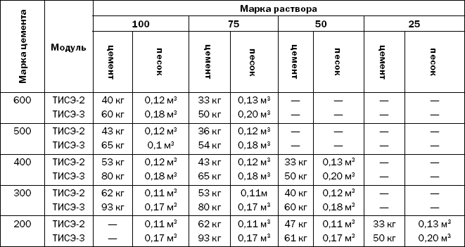
Прежде чем воспользоваться данными табл. 14, надо выбрать соответствующий типоразмер модуля, примерно определить величину нагрузки, марку цемента и марку раствора.
Некоторые начинающие строители наивно полагают, что для увеличения прочности бетона достаточно увеличить норму цемента, и совершенно не учитывают усадку бетона, которая объясняется усадкой твердеющего цементного теста и в первые дни составляет 70 % от месячного значения. При этом линейные размеры блока уменьшаются приблизительно на 0,3–0,5 мм на 1 м длины.
Следствием крупных усадочных деформаций является трещинообразование. И чем больше в смеси цемента, тем значительнее усадка, тем выше риск растрескивания. Поэтому в процессе формования блоков необходимо следовать двум простым правилам:
1) правильно дозировать компоненты;
2) обеспечивать высокую влажность в первые несколько дней созревания бетона.
Смесь для формования блоков приготавливается вручную или с применением бетоносмесителей (рис. 93).
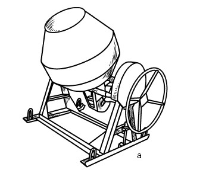
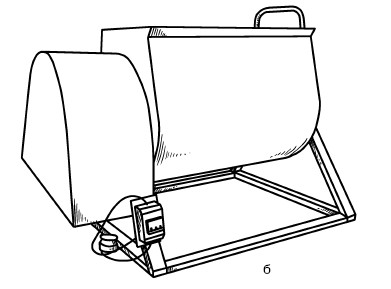
Рис. 93. Смесители: а – гравитационный; б – принудительный
Предпочтительны принудительные смесители, но, поскольку они достаточно дороги, есть смысл их приобретать, если блоки формуются одновременно в нескольких модулях. Индивидуальному застройщику легче купить гравитационный смеситель или затворять смесь вручную (последнее тоже достаточно производительно: практикой проверено, что два человека смешивают четыре тачки песка с одним мешком цемента за 20 мин).
При использовании гравитационного смесителя жесткая смесь получается одним из трех способов:
1) смесь перемешивается вместе с двумя-тремя булыжниками, которые при падении будут разбивать структуру жесткой смеси;
2) уменьшается объем раствора (снижается количество песка, который потом вручную подмешивается в раствор) и угол наклона барабана;
3) перемешиваются компоненты смеси, взятые в сухом виде, а вода вливается позже, и состав вручную перелопачивается на листе железа.
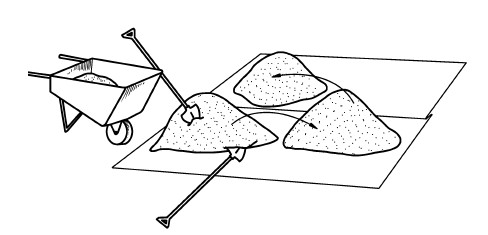
Рис. 94. Последовательность приготовления сухой цементно-песчаной смеси вручную
Гравитационный смеситель следует сначала промыть небольшим количеством воды, чтобы удалить бетон, налипший на стенки, иначе его количество постепенно увеличится и будет мешать процессу. После этого перемешать сухие песок и цемент. Когда они превратятся в однородную смесь, влить воду и перемешивать еще 2–3 мин.
Чтобы приготовить смесь вручную, необходимо иметь желоб или два листа железа и т. п. Последовательность работы такова (рис. 94):
1) на лист железа (ближе к одному из его краев) насыпать половину песка, на него – цемент и оставшийся песок;
2) перемешивая, перебросить эту горку на другое место, повторить 2–3 раза.
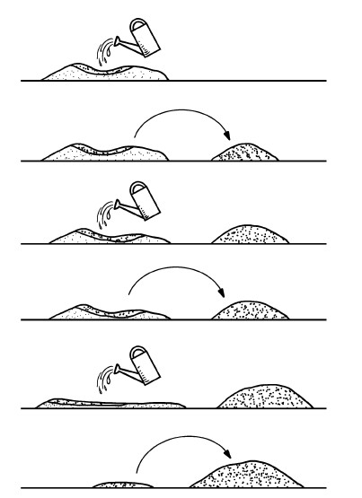
Рис. 95. Последовательность приготовления влажной цементно-песчаной смеси
Можно приготовить смесь из влажных компонентов (рис. 95):
1) насыпать смесь так, как описано выше, сделать в ней лунку, влить треть необходимого количества воды (обязательно пользуясь лейкой, а не ведром); спустя 30–60 сек перебросить увлажнившуюся часть смеси с помощью лопаты на другое место;
2) сделать лунку в том количестве цемента и песка, которое осталось, влить вторую треть воды, спустя такое же количество времени переложить влажный слой смеси, добавив ее к первой части;
3) остаток смеси разровнять, добавить последнюю треть воды, перемешать и соединить с остальными частями.
Не надо готовить большое количество смеси, если имеется только один формовочный модуль ТИСЭ. Достаточно столько смеси, чтобы ее хватило на 3–5 блоков.
Можно воспользоваться миксером на основе электродрели (рис. 96) мощностью 900 Вт и скоростью вращения 450 об/мин, перемешивая состав в емкости на 30–40 л.
Блок ТИСЭ формуется непосредственно на стене, которая получается ровной, поскольку форма имеет выступ, охватывающий предыдущий ряд блоков. Чтобы влага не впиталась готовыми блоками, нижний ряд увлажняется (если этого не сделать, блок не получится необходимой прочности и сцепление блоков между рядами будет недостаточным).
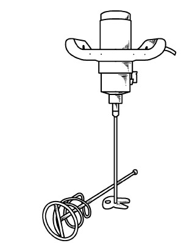
Рис. 96. Растворный миксер-дрель с насадкой
Чтобы сформовать блок, необходимо действовать следующим образом:
1) установить форму на кладку, оставив между новым и предыдущим блоком зазор 10 мм (если хочется добиться абсолютной точности, можно изготовить вставку толщиной 8 мм для блоков ТИСЭ-2 и 3–5 мм для блоков ТИСЭ-3 и вкладывать ее между блоком и формой);
2) вставить в форму поперечные штыри, пустотообразователи, продольный штырь для фиксации пустотообразователей (от последнего с приобретением некоторого опыта можно отказаться);
3) в 2–3 приема заполнить форму смесью (так будет легче ее утрамбовать);
4) уплотнить смесь трамбовкой, уделив особое внимание углам. Удары должны быть средними по силе и производиться без напряжения и излишнего усердия;
5) утрамбовав смесь до уровня, немного превышающего верхний край пустотообразователя, скребком удалить излишек смеси;
6) установить на блок выжимную панель, извлечь все штыри (для облегчения сделать это с поворотом рукоятки);
7) вынуть пустотообразователи (иногда, если смесь жесткая и хорошо уплотнена, для этого приходится пользоваться рычагом из трамбовки и поперечного штыря, чтобы сдвинуть их с места, потом они легко вынимаются);
8) поднять форму, удерживая блок специальной выжимной панелью (только в начале движения). При этом необходимо действовать аккуратно, не допуская перекосов. Надо встать так, чтобы низ блока находился не выше уровня локтей. Когда стена достигнет 1 м в высоту, нужно находиться на подмостях. Если объем работ незначительный, то верхние ряды стены можно выложить блоками, сформованными отдельно.
Некоторые этапы работы представлены на рис. 97.
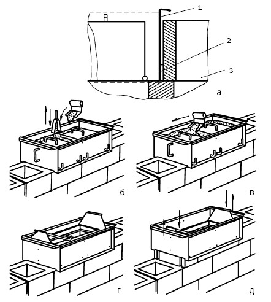
Рис. 97. Основные этапы формования блока ТИСЭ:
а – установка формы с фиксацией зазора; б – заполнение формы и уплотнение смеси; в – удаление излишка смеси; г – подъем пустотообразователей; д – снятие формы; 1 – форма; 2 – вставка; 3 – стеновой блок
Выложив 3–4 ряда, надо проконтролировать вертикальность стены и при необходимости скорректировать положение формы. После того как она будет заполнена смесью, ее необходимо отклонить до соответствующего положения. Если смесь немного уплотнить, то, проникнув под штыри модуля, она закрепит форму.
Чтобы повысить сцепление блоков смежных рядов, после уплотнения смеси на поверхности формуемого блока можно рукояткой продольного штыря сделать несколько углублений («шпонок») (рис. 98), которые заполнятся раствором при выполнении очередного ряда.
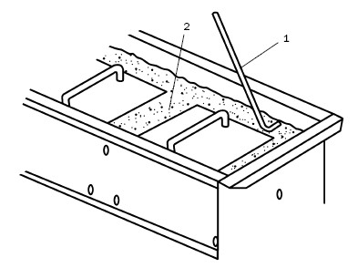
Рис. 98. Выполнение «шпонок»: 1 – продольный штырь; 2 – углубление
Чтобы на боковых стенках блока сделать по два вертикальных паза для раствора, нужно формовочным угольником проткнуть уплотненную смесь, прижав его к стенке модуля на расстоянии 20–30 мм от угла. При распалубке смесь осторожно отделяется уголком. Ни в коем случае нельзя допустить, чтобы она попала в вертикальный канал. Для этого достаточно придерживать ее рукой. На этом этапе можно сделать пазы под декоративную штукатурку или в виде внешней отделки.
Треугольные пазы между блоками (не весь зазор между блоками!) замоноличиваются в конце рабочего дня. Для этого приготавливается более подвижная цементно-песчаная смесь, которая заполняет желоб формовочного уголка и с него сбрасывается в пазы между блоками, после чего торцом уголка уплотняется.
Боковые и верхние плоскости блоков затираются в конце дня или сразу после распалубки, для чего используются разные полутерки: для боковых поверхностей длиной, как минимум, 50 см, для верхних – не менее 120 см при ширине 10–15 см. При этом нужно следить, чтобы стенки оставались плоскими.
В процессе формования блока надо контролировать горизонтальность его верхней плоскости.
Для обеспечения перевязки швов требуются не только целые блоки, но и половинки. Для их изготовления используется модуль ТИСЭ, в который вкладывается перегородка, для чего один поперечный штырь вставляется в верхние центральные отверстия боковых стенок формы (рис. 99), а внизу перегородка упирается ребром в третий поперечный штырь.
Формование блока производится описанным способом. После снятия формы удаляется и перегородка. При этом блок следует слегка придерживать выжимной панелью.
Поперечные штыри оставляют в готовом блоке четыре отверстия диаметром 10 мм. Их можно заполнить при заделке швов между блоками или сохранить, если они нужны для вентиляции или отделки.
Поскольку модель ТИСЭ комплектуется мелкими деталями, то они могут теряться, проваливаться в вертикальные каналы и т. п. Чтобы этого не произошло, нужно правильно организовать рабочее место, изготовив из фанеры толщиной 5 мм платформу. С одного ее края необходимо прибить брусок, который будет одновременно служить и бортиком, и рукояткой для перемещения платформы вдоль кладки. Для лучшего скольжения нижняя сторона платформы должна быть гладкой (под бруском с нее надо снять фаску), а для сохранности ее лучше покрыть олифой и выкрасить.
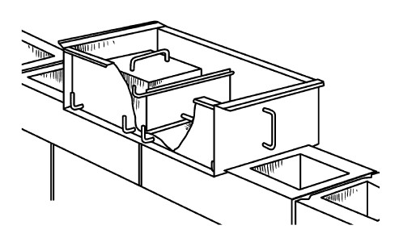
Рис. 99. Модификация модуля ТИСЭ для формования половинного блока
В зависимости от ряда причин, в частности типа модуля, наличия навыка и опыта работы с опалубкой ТИСЭ, заполнителя и необходимого качества смеси, организации рабочего процесса, погоды, на формование блока требуется разное количество времени. При использовании модуля ТИСЭ-2 непосредственно на формование (без учета приготовления смеси и ее доставки) уходит 5–10 мин (для половинного блока примерно столько же), применение модуля ТИСЭ-3 увеличивает время формования до 7–14 мин. На заполнение зазора между блоками – 1–2 мин. Этого и необходимо придерживаться, работая без чрезмерного напряжения.
Если формовать блоки без центральной перемычки, т. е. делать однопустотные (рис. 100), то их теплоизоляционные свойства повышаются в 1,5 раза. Чтобы выполнить такой блок, между пустотообразователями надо поместить вставку, изображенную на рис. 87.
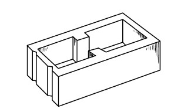
Рис. 100. Однопустотный блок
Чтобы раствор у торцевых стенок модуля не проваливался вниз, пустоты предыдущего ряда целиком заполняются утеплителем. Вставка вынимается из формы после извлечения пустотообразователей. Для прокладывания в стене, сложенной с применением модуля ТИСЭ-3, дымохода или вентиляционного канала необходимо подготовить под него блоки с круглой полостью (рис. 101), диаметр которой может достигать 260 мм.
Цилиндр изготавливается из стальной полосы размером 870 x 160 мм (длина окружности диаметром 260 мм равна 816 мм). При формовании блока цилиндр вставляется вместо одного из пустотообразователей плоской стороной к тычковой стороне формы. Высота цилиндра превышает высоту пустотообразователя на 10 мм, чтобы зафиксировать его над таким же отверстием предыдущего блока.
Формование такого блока не отличается от обычного процесса. Чтобы вынуть цилиндр, надо большую внутреннюю отбортовку отжать к центру, придерживая короткую на прежнем месте. После такого смещения цилиндр легко извлекается. Полость, которую он оставил, следует загладить, сняв фаску, но не ранее чем через 4 ч.
В порядке информирования
Хотя автор технологии считает более рациональным изготовление блоков непосредственно на стене, он не исключает возможность формовать их и отдельно, после чего поднимать стену тем же способом, которым выполняется кирпичная кладка, т. е. на растворе и с перевязкой швов. При этом следует обратить внимание на ряд моментов:
1) высота блоков увеличится на 5 мм за счет выступов в низу формы;
2) к высоте блоков каждого ряда прибавится толщина раствора – 10 мм. Поэтому расстояние между рядами составит 165 мм, а не 150 мм, как при формовании блоков на стене.
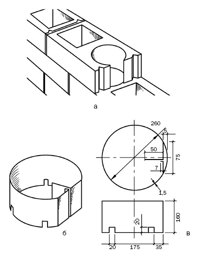
Рис. 101. Модуль ТИСЭ с круглой полостью: а – в готовом виде; б – общий вид цилиндрического пустотообразователя; в – рабочий чертеж
Для изготовления блоков необходимо подготовить ровную жесткую поверхность. Если это будет бетонное или асфальтовое покрытие, то на него надо постелить полиэтиленовую пленку, чтобы не допустить сцепления блоков с основанием. Использовать широкие доски не стоит, поскольку они раскачиваются и разрушают готовые блоки.
Чтобы не занимать под формование блоков все свободное место, предлагается укладывать их в штабель, после чего осуществлять распалубку, причем расположить штабель надо как можно ближе к тому месту, где будет вестись стройка.
Удобнее всего формовать блоки на столе. Он может быть высотой 80 см, если будут работать стоя, или 60 мм, – если сидя. На столе должно быть достаточно места, для того чтобы разместить все необходимое, при этом не следует его делать слишком тяжелым, чтобы не испытывать трудности при его перестановке (а это придется делать часто).
Чтобы формовать блоки, нужно:
1) поставить модуль на стол и установить в него пустотообразователи;
2) заполнить пустоты смесью, уплотнить, снять излишек;
3) вынуть продольный штырь;
4) положить на блок выжимную пластину и извлечь пустотообразователи;
5) перенести форму с блоком, который лежит на поперечных штырях, к штабелю, аккуратно положить на место, вынуть штыри и выполнить распалубку.
Чтобы блоки в штабеле не прилипали друг к другу, их верхнюю поверхность нужно затереть и накрыть полиэтиленовой пленкой.
Для удобства осуществления распалубки высота штабеля не должна превышать 120 см. Блоки при этом кладутся плотно (например, на площадке 10 x 4 м можно разместить 2400 единиц, которых будет достаточно для постройки двухэтажного дома 6 x 8 м с внутренней стеной).
При определении длины штабеля надо исходить из того, что очередной ряд блоков можно будет уложить на предыдущий только после схватывания раствора, т. е. примерно через 2,5–3 ч. Если на один блок уходит 7 мин, то за это время готовыми будут 24 блока, т. е. ряд длиной 12 м. Поскольку это не очень удобно, блоки можно класть в два ряда. Есть, однако, и более рациональный вариант – класть блоки в три штабеля и перемещаться вокруг них по траектории, напоминающей восьмерку (рис. 102).
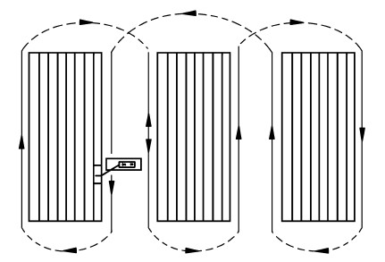
Рис. 102. Формирование штабелей и перемещение вокруг них
Преимущество этого варианта состоит в том, что общий периметр штабелей увеличится, как и время между укладкой нижнего и верхнего блоков.
Складывая блоки, надо учесть и температуру воздуха. Поскольку при пониженной температуре раствору требуется больше времени для схватывания, то следует увеличить периметр штабеля. Хотя можно вводить в раствор ускорители (сульфат натрия, нитрит кальция и др.), количество которых составляет примерно 0,5–1 % от объема цемента; или суперпластификаторы, которые по прошествии 1–1,5 резко снижают подвижность смеси.
Отдельно формовать половинки блоков можно так, как было описано выше, но есть и другой способ, дающий возможность изготавливать одновременно два половинных блока. Для этого надо в боковых стенках модуля просверлить по одному отверстию диаметром 11 мм и сделать два добавочных поперечных штыря диаметром 10 мм. Чтобы сформовать два блока, надо выполнить следующие действия:
1) вставить в средние отверстия дополнительные штыри, которые станут опорой перегородки модуля;
2) сформовать один половинный блок (заполнить раствором форму, уплотнить его, снять излишек);
3) извлечь дополнительные штыри; приподняв перегородку, сначала поставить на место их, потом перегородку;
4) сформовать второй блок;
5) вынуть дополнительные штыри, убрать перегородку (это легче сделать, если сначала вынуть нижний штырь, потом наполовину верхний, повернуть его рукоятку вниз, чтобы его законцовка уперлась в отгиб перегородки, и использовать в качестве рычага, под напором которого перегородка сдвинется);
6) положить на блоки выжимную панель, извлечь пустотообразователи;
7) перенести форму и уложить в штабель, выполнить распалубку.
Иногда возникает необходимость изготовить полнотелые блоки как из жесткой смеси, так и на легких заполнителях. Но в первом случае необходимо быть готовым к тому, что возникнут проблемы с распалубкой. Дело в том, что хорошо утрамбованная жесткая смесь давит на вертикальные стенки формы, которые под таким воздействием прогибаются на 1–3 мм. Именно по данной причине при распалубке пустотных блоков сначала извлекаются пустотообразователи, и этим снижается напряжение в смеси, а потом выполняется распалубка.
В отсутствие пустот в полнотелых блоках напряжение сохраняется, поэтому осуществить распалубку гораздо сложнее. Для разрешения этой проблемы можно приготовить более пластичную смесь с водоцементным соотношением 0,45–0,5; ввести заполнители с крупными фракциями (подойдет кирпичный бой, если нет необходимости в повышенной морозостойкости).
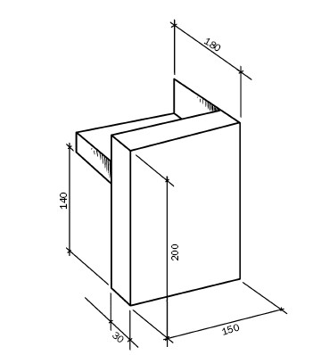
Рис. 103. Переставная накладка (размеры указаны в миллиметрах)
При использовании модуля ТИСЭ-2 объем блока составит 25 л, для заполнения модуля ТИСЭ-3 потребуется 38 л. Блоки можно формовать непосредственно на стене или отдельно.
Надо сказать, что полнотелый блок весит достаточно много, поэтому, чтобы его перенести, в такой блок следует вложить две петли, изготовленные из проволоки диаметром 3 мм. Кроме того, понадобится трамбовка с более широкой площадкой.
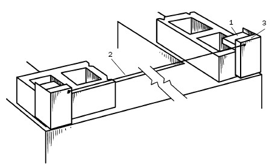
Рис. 104. Положение шнура-причалки на переставных накладках: 1 – накладка; 2 – шнур-причалка; 3 – опора шнура
При формовании блока смесь закладывается в 2–3 приема, и каждый слой уплотняется. Поверхность блока выравнивается и излишек удаляется, когда утрамбованная смесь чуть выступает за боковые стенки модуля. Переносить блок, продев через петли отрезов арматуры или трубы, и осуществлять распалубку лучше вдвоем.
Менее тяжелыми получаются полнотелые блоки из смеси на облегченных заполнителях. Для фундамента они слишком пористые и могут использоваться лишь как стеновые. Индивидуальные застройщики чаще всего выполняют такие блоки (510 x 250 x 190 мм) из опилкобетона, поскольку этот материал наиболее дешевый. Для несущих стен рекомендуется бетон М15 из цемента, извести, песка и опилок (1: 1,2: 1,2: 5). Прочность одного блока, изготовленного в модуле ТИСЭ-2, составляет более 10 т, и этого вполне достаточно для возведения двухэтажного дома. Методика формования блоков из опилкобетона не отличается от описанной, за исключением одного момента: такому блоку требуется больше времени для набора прочности.
Возведение стен из блоков, изготовленных по технологии ТИСЭ, отличается некоторыми особенностями по сравнению с традиционной кладкой из блоков или кирпича, что объясняется различными причинами:
1) необычной конструкцией модулей;
2) повышенной степенью пустотности блоков;
3) формованием блоков непосредственно на стене.
Блоки укладываются на слой гидроизоляции, расстеленный по предварительно выровненной поверхности фундамента. Чтобы стены были прямолинейными, блоки формуются по шнуру-причалке, расстояние между которыми составляет 2 мм. Шнур натягивается на две переставные накладки, изготовленные из жести толщиной 0,8 мм и доски размером 150 x 30 мм (рис. 103).
Опорой шнура может быть шуруп, положение которого определяется после установки формы на стену (рис. 104).
Первые стеновые блоки размещаются по углам дома, поскольку боковые ребра формы препятствуют тому, чтобы блоки формировались вплотную к ним при выполнении перевязки углов. Помимо этого, угловые блоки должны быть опорой для крепления шнурапричалки, на который необходимо ориентироваться при формовании других блоков.
Верхняя поверхность угловых блоков должна находиться в одной горизонтальной плоскости, которая контролируется по шнурам обноски. Под угловые блоки наносится минимальный слой кладочного раствора. Кроме того, надо помнить о формировании на верхней поверхности блока выборки (небольшого углубления – 5–10 мм), на который придется нижний выступ формы (рис. 105).
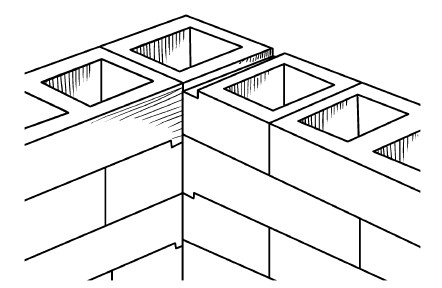
Рис. 105. Выборка в угловом блоке
После закрепления шнура-причалки на фундамент устанавливается форма модуля (рис. 106). Для фиксации под нее можно подложить узкие рейки необходимой толщины (это следует контролировать с помощью строительного уровня).
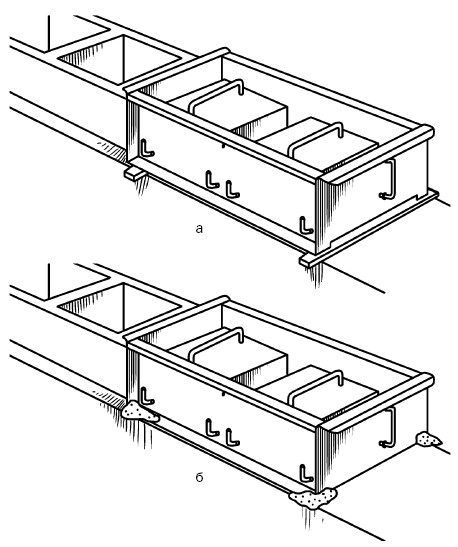
Рис. 106. Установка модуля ТИСЭ: а – на выравнивающие подкладки; б – на жесткий раствор
Как только начинается формование блока, подкладки тут же нужно извлечь, поскольку раствор, проникший под форму, закрепит ее в соответствующем положении.
Рейки можно заменить жестким раствором, который накладывается под углы формы. Чтобы форма встала на нужный уровень, достаточно слегка надавить на нее или постучать по углам.
Удобнее всего, когда угловые блоки внешних стен формуются в конце рабочего дня, так как за ночь они достаточно отвердеют и смогут удерживать шнур-причалку. Утром останется только выверить их вертикальность и горизонтальность и, если потребуется, затереть плоскости до нужного уровня.
Укладка первого ряда внутренних стен начинается с выполнения блоков, сопрягаемых с внешними стенами, а шнур-причалка натягивается не менее чем через 2–3 ч, которые необходимы для того, чтобы блоки достаточно отвердели.
Когда формуются замыкающие стену два последних блока (будь то внутренние или внешние), в модуль не вставляется продольный штырь, поскольку потом его нельзя будет вынуть. Поэтому следует особое внимание уделить уплотнению смеси вокруг пустотообразователей, не смещая их в ту или другую сторону.
Технология возведения стен, их длина и угловая перевязка определяются типоразмером модуля ТИСЭ, так как соотношение между шириной блока и его длиной у разных опалубок различное (рис. 107).
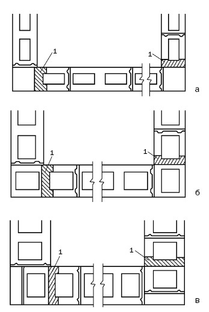
Рис. 107. Соотношение длины стен и их угловой перевязки в зависимости от модуля, на базе которого формуется блок (размеры указаны в миллиметрах): а – ТИСЭ-1; б – ТИСЭ-2; в – ТИСЭ-3; 1 – выборка
Внутренний размер стен при любых модулях кратен 26 см. Если внутренние размеры дома равны, например, 6 x 8 м, то надо принять такие линейные размеры, которые без остатка делятся на 26 см, т. е. 5,98 x 8,06 м.
Угловая перевязка стен в зависимости от использующегося модуля выполняется по-разному. Если применяется модуль ТИСЭ-2 (толщина стен 250 мм), то проблем не возникает, поскольку длина и ширина блока соотносятся как 1: 2. Если используется модуль ТИСЭ-1 (толщина стен 190 мм), то угловые блоки формуются более короткими, т. е. с одним пустотообразователем и перегородкой, стоящей на штырях, вставленных в дополнительный ряд отверстий (рис. 108).
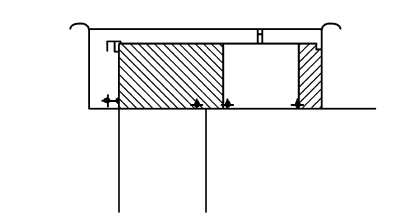
Рис. 108. Угловая перевязка стен, строящихся на основе модуля ТИСЭ-1
При применении модуля ТИСЭ-3 в углу формуется узкий стеновой блок длиной 120 мм, при этом полость нижнего блока заполняется пористым заполнителем, чтобы смесь при формовании блока не проваливалась вниз (рис. 109).
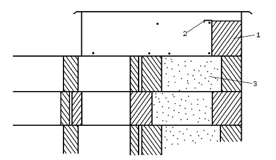
Рис. 109. Формование узкого блока при использовании модуля ТИСЭ-3: 1 – бетонный раствор; 2 – перегородка; 3 – пористый заполнитель
Блоки, выполненные на основе модуля ТИСЭ-3, по своим габаритам кратны стандартному кирпичу, поэтому вместо формования узкого блока можно заполнить это место кирпичом (рис. 110) (его можно применить в качестве отделки и поддержать таким же оформлением оконных и дверных проемов; разумеется, кирпич должен быть облицовочным).
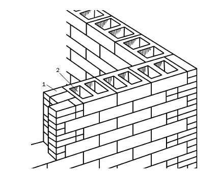
Рис. 110. Кирпичная кладка при возведении стен на основе модуля ТИСЭ-3: 1 – кирпич; 2 – пористый заполнитель
При возведении стен по технологии ТИСЭ нет необходимости в применении кладочного раствора. Она всегда получается ровной, так как формы имеют специальные выступы, которые надеваются на предыдущий ряд блоков и удерживают их в нужном положении. Важно только не забывать делать выборку при формовании угловых блоков.
Если длина стен не совпадает с длиной фундамента или перекрытий, то ее можно подогнать, либо изменив промежуток между блоками (он варьируется от 5 до 15 мм), либо оставив один или два технологических зазора (рис. 111) и заполнив их жестким раствором (для этого понадобится деревянная съемная опалубка (рис. 112)) или кирпичом. При использовании кирпичей пустоты заполняются керамзитом и пр.
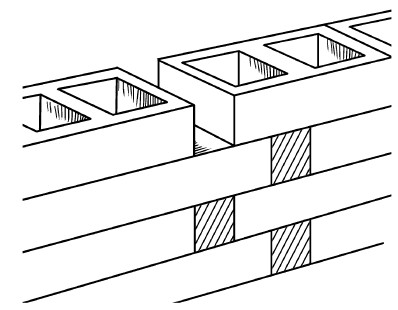
Рис. 111. Технологический зазор между блоками
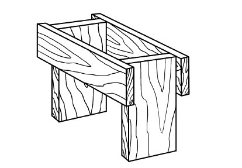
Рис. 112. Съемная опалубка для заполнения технологического зазора
Стены, строящиеся по технологии ТИСЭ, усиливаются горизонтальным и вертикальным армированием. Необходимость первого обосновывается тем, что армирование препятствует трещинообразованию в результате усадочных деформаций, малой жесткости фундамента или недостаточной несущей способности основания.
Блоки, над которыми будет устраиваться горизонтальное армирование, формуются со «шпонками» на верхней плоскости для улучшения сцепления с арматурой. Для этой цели подходят стальная проволока диаметром 2–3 мм, сваренная в виде сетки с размером ячеек 25 x 25 мм и укладываемая через каждые 4–5 рядов, или дорожная сетка из стекловолокна с таким же размером ячеек и шириной 1 м. Последняя имеет явные преимущества перед стальной, поскольку не ржавеет, накладывается на стыках друг на друга, не увеличивая толщины кладки, не является мостиком холода.
При этом нельзя допускать, чтобы стыки сетки:
1) располагались по вертикали на одной линии;
2) попадали на углы дверных и оконных проемов.
В сетке разрешается выполнять отверстия шириной до 70 мм и необходимой длины для прокладки инженерных коммуникаций.
Вместо сетки подойдут стальные прутки диаметром 5–6 мм, которые размещаются в зоне продольных стенок блоков (не на пустотах). Концы прутков соединяются на стыках на 200–300 мм и загибаются, что дополнительно усиливает их соединение с бетоном. Армирование прутками практикуется, когда в стене проходят коммуникации, вентиляционные и дымовые каналы, когда конструкция стены нуждается и в вертикальном армировании. Вместо горизонтального армирования (рис. 113) можно по периметру дома выполнить пояс жесткости на уровне перекрытий.
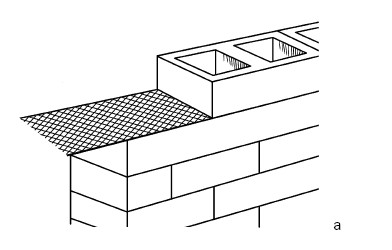
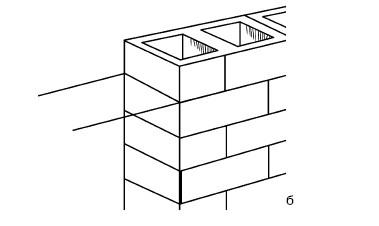
Рис. 113. Горизонтальное армирование стены: а – сеткой; б – арматурными прутками
Если на стены воздействуют боковые нагрузки или перекрытие выполняется в виде бетонных плит, из стальных балок и тому подобного, то осуществляется вертикальное армирование стен (рис. 114). Для этого используются стальные прутки диаметром 10–15 мм (длина должна быть достаточной, чтобы размещаться в поясах жесткости), которые вставляются в каждый четвертый или пятый колодец.
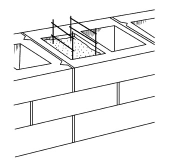
Рис. 114. Вертикальное армирование стен
Раствор, который применяется при армировании, – это цементно-песчаная смесь (1: 3). Перед тем как заполнить колодец бетоном (это выполняется за раз на всю глубину колодца), его стенки увлажняются, потом смесь накладывается слоями толщиной 20–30 см и штыкуется вокруг арматуры. В течение последующих 5–7 дней надо ухаживать за бетоном и при необходимости увлажнять стенки вокруг вертикальных балок.
Относительно пояса жесткости (или сейсмопояса) следует сказать, что при возведении стен по технологии ТИСЭ он может быть устроен разными способами, например таким: перед тем как сформовать последний перед поясом ряд, на предыдущий нужно уложить арматурную сетку, на нее более плотный материал (пергамин). В результате в последнем ряду образуются несквозные полости, которые примерно на две трети объема надо заполнить керамзитом (шлаком и т. п.) и накрыть еще одним слоем пергамина. Когда на стене будет установлена опалубка, арматура заливается бетоном.
По мере того как поднимаются стены, необходимо выполнять перевязку с внутренней несущей стеной (фундамент под ними тоже должен быть соединен). Чтобы качественно состыковать стены, важно, чтобы зазор между ними был более 6 см. В вертикальные стыки между стеновыми блоками внешней стены вставляется арматурная сетка, которая выступает в зону стыка. На эту зону устанавливается опалубка и заполняется цементнопесчаной смесью (1: 3) через каждые 4 ряда, после чего на внутреннюю стену укладывается арматурная сетка. Через 2–3 дня опалубка снимается, после чего еще примерно в течение недели стыки время от времени увлажняются, чтобы на них не появились трещины.
Перевязка с ненесущей внутренней стеной может осуществляться и после того, как построены стены и закончено перекрытие. Для этого к стене шурупами и пластмассовыми дюбелями прикрепляется брус.
Соединение внешней стены с внутренней представлено на рис. 115.
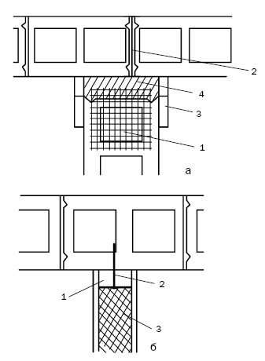
Рис. 115. Перевязка внешней стены с внутренней: а – несущей; 1 – арматурная сетка внутренней стены; 2 – арматурная сетка внешней стены; 3 – опалубка; 4 – бетон; б – ненесущей; 1 – брус; 2 – крепеж; 3 – внутренняя стена
В процессе возведения стен нередко требуется выполнить узкий простенок, например между оконными или дверными проемами. При ширине простенка 1–1,5 м от перевязки блоков можно отказаться, так как это нецелесообразно. Вполне достаточно осуществить горизонтальное армирование через каждые 3 ряда блоков. Если закладываются пояса жесткости, то стены без перевязки могут быть довольно протяженными.
Трудно представить стены без окон и дверей. Проемы для них закладываются сразу после того, как выполнены угловые блоки. Это необходимо делать, чтобы при формовании половинных блоков модуль имел опору.
Если размер оконных и дверных блоков не соответствует тем проемам, которые оставлены при возведении стен по технологии ТИСЭ (ширина проема не кратна 26 см), то проем нужно сузить. Самый простой способ – устроить опалубку (она должна охватывать по 4–5 рядов) и заполнить ее раствором (до укладки горизонтальной арматуры), более подвижным, чем использующийся при формовании блоков. Чтобы обеспечить прочное соединение этого выступа со стеной, еще на этапе ее возведения в проем следует выпустить арматуру.
В дверных и оконных проемах нужно выполнить выступ («четверти»), для чего используется формовочная скоба. К этому надо приступить примерно через 2 ч после того, как смежный с ним блок схватится. Если прошло больше времени и блок уже высох, то его следует хорошенько увлажнить. Процесс формования выступа наглядно представлен на рис. 116 и не требует комментария.
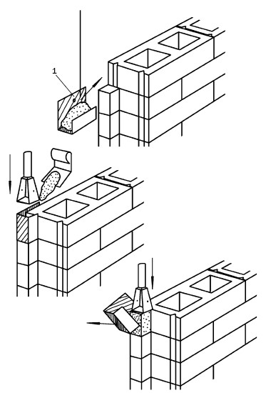
Рис. 116. Последовательность формования выступа в дверном или оконном проеме: 1 – формовочная скоба
Оформление дверного или оконного проема перемычкой осуществляется обычным способом, например укладываются стальные уголки 120 x 120 мм или готовые железобетонные перемычки с разными параметрами:
1) высотой 190, 220 мм;
2) длиной 1,3; 1,55; 1,8; 1,95; 2,45; 2,7; 2,98; 3,1 м;
3) шириной 120, 250 мм.
Независимо от того, какая перемычка будет устанавливаться, в проеме оставляется специальный выступ, на который она будет уложена. Для этого формуется половинный стеновой блок. Блок, который станет основанием для перемычки, формуется на арматурной сетке, куда дополнительно кладут пергамин. Это не позволит бетону, заполняющему пустоту в последующем блоке, проваливаться в колодец. Если нагрузка, которую оказывает перемычка, велика, то под опорой следует предусмотреть вертикальное армирование на всю высоту – до нижнего перекрытия.
Если высота перемычки превышает высоту стенового блока, то уступ под нее должен быть более глубоким. Для этого в тело формующегося блока надо заложить прокладки из толя или фанеры. После распалубки часть блока над ней можно будет без труда убрать.
В качестве еще одного варианта выполнения глубокой выборки можно предложить укладку из стандартных кирпичей, положенных на раствор (рис. 117).
Перед тем как устанавливать оконный блок, в горизонтальной плоскости проема надо перекрыть вертикальные каналы, что выполняется уже не раз описанным способом, т. е. последний ряд блоков формуется на арматурной сетке, после чего полости заглушаются пергамином, пористым заполнителем и тонким слоем раствора.
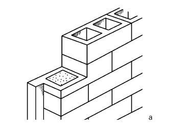
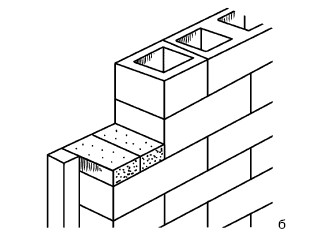
Рис. 117. Способы выполнения глубокого уступа под перемычку в проеме: а – посредством выборки в блоке; б – путем укладки кирпичей
В порядке информирования
Строительство стен дома из готовых блоков, сформованных с применением модулей ТИСЭ, практически повторяет традиционную кладку, и даже инструменты требуются те же: кельма, отвес, шнур-причалка, уровень. Тем не менее имеется отличие: блоки укладываются в перевернутом виде. Дело в том, что при отдельном формовании блоков под пустотообразователи попадает некоторое количество уплотняемого раствора, и следствием этого является увеличенная площадь нижней поверхности блока. Поэтому на перевернутом блоке будет лучше удерживаться кладочный раствор. Поскольку раствор необходимо нанести на довольно узкую полоску, то во избежание трудностей и попадания его в пустоты следует изготовить растворную рамку (рис. 118), которая не только не допустит дефектов при кладке, но и равномерно распределит раствор по поверхности блока, а также сэкономит смесь.
Для рамки надо приготовить рейки сечением 60 x 20 мм, фанеру толщиной 12 мм, саморезы (подойдут и шурупы), небольшой кусок оцинкованной стали. Далее ее необходимо собрать в соответствии с чертежом на рис. 118. Размеры, которые на нем указаны под буквами, подбираются в зависимости от того, каким модулем пользуется застройщик. Если это ТИСЭ-2, то А = 162 мм, Б = 252 мм, В = 45 мм; для модуля ТИСЭ-3 – 262, 382, 60 мм соответственно. Чтобы продлить срок службы рамки, ее следует проолифить и выкрасить.
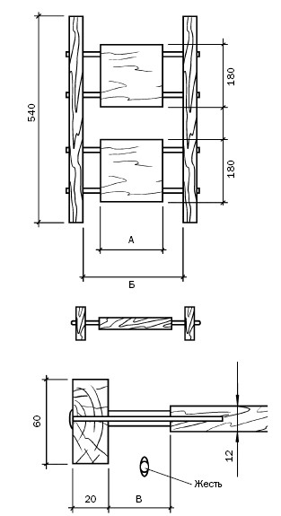
Рис. 118. Рабочий чертеж для изготовления растворной рамки (размеры указаны в миллиметрах)
Прежде чем приступать к возведению стены блоками, сформованными на основе модуля ТИСЭ-3, необходимо заготовить узкие блоки (см. рис. выше), которые потребуются для угловой перевязки стен (рис. 119).
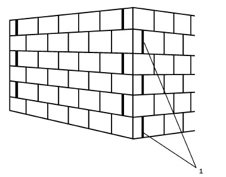
Рис. 119. Выполнение угловой перевязки стен, возведенных из готовых блоков ТИСЭ: 1 – узкий блок
Первыми укладываются угловые (маячные) блоки с предварительной проверкой их положения по обноске.
После того как раствор достаточно отвердеет, устанавливаются переставные накладки, на которые натягивается шнур-причалка. Кладка последующих рядов ведется от угла. Предыдущий ряд и нижняя сторона готовых блоков увлажняются. Промежуток между блоками заполняется раствором до того, как будет применена растворная рамка.
Данная рамка помещается на стену так, чтобы пустоты в блоке предшествующего ряда оказались закрытыми, после чего на нее накладывается раствор (поэкспериментировав, можно довольно точно установить необходимое количество), а излишек удаляется. Ориентиром служит плоскость прямоугольных заглушек (рис. 120).
После того как растворная рамка будет поднята, на поверхности блока останется слой раствора толщиной 12 мм. Далее остается установить блок, осадить его до нужного положения легкими постукиваниями рукояткой кельмы.
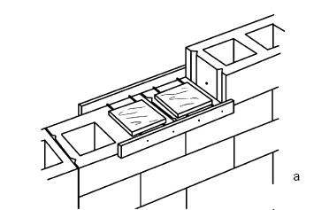
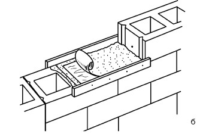
Рис. 120. Возведение стены из готовых блоков: а – установка растворной рамки; б – нанесение раствора